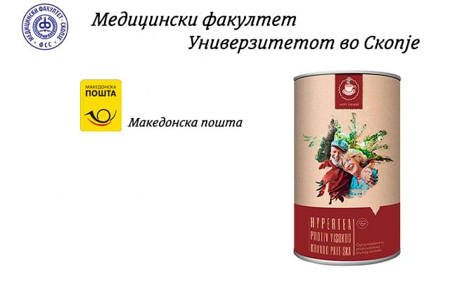
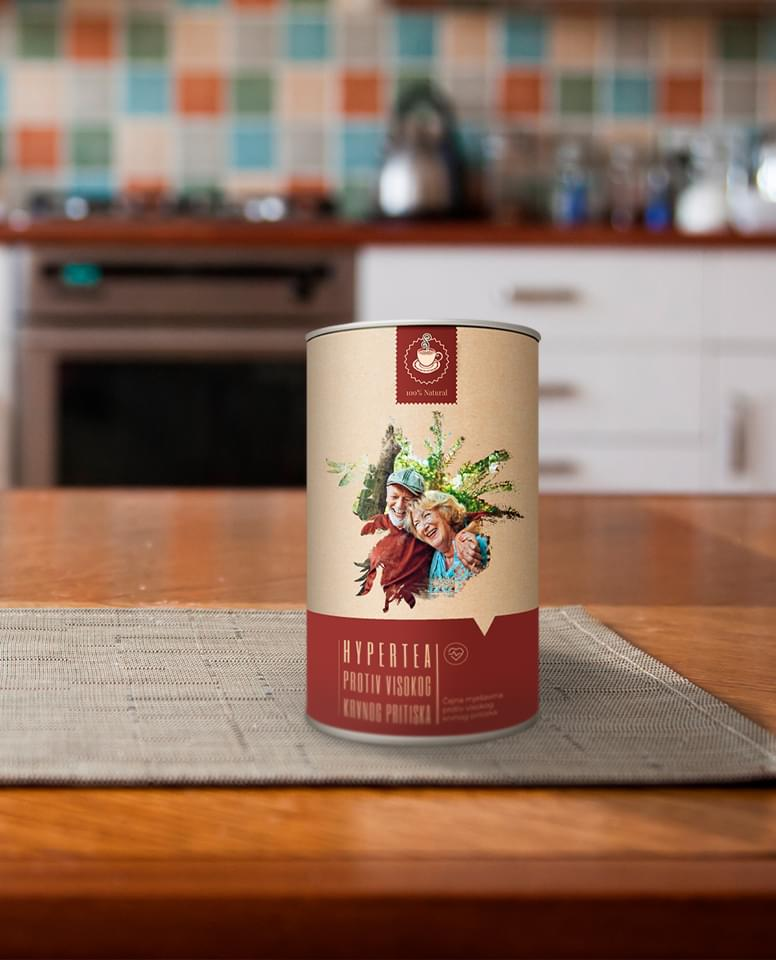
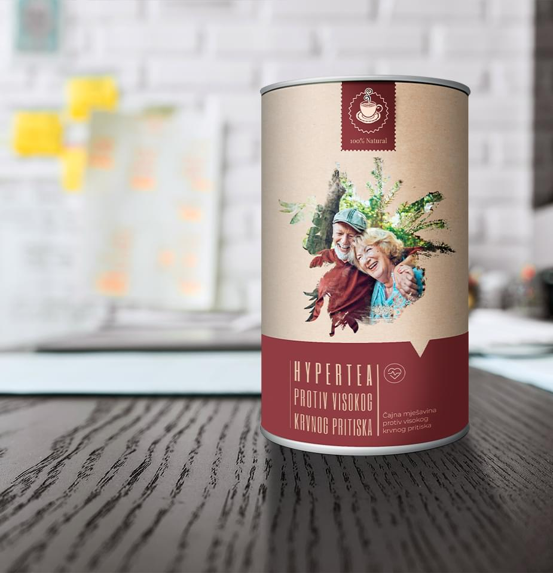
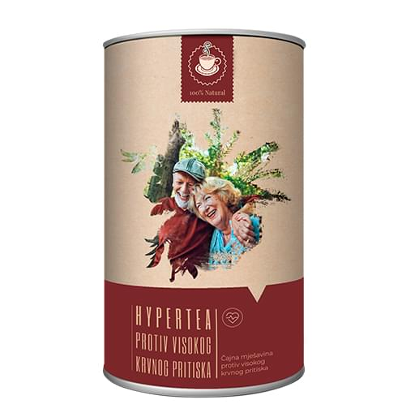

Оток, болка во мускулите и грчеви – 3 сигурни показатели за затнати вени. Како може да се лекувате сами во домашни услови?
Кој е најлошиот непријател на холестеролот и
згрутчувањето на крвта, а најдобар пријател на вените?
Дали навечер ви отекуваат нозете? Дали ви се отечени стапалата и нозете и дали имате
модрици на глуждовите? Тоа може да бидат знаци на оток во вените што значи дека се
создала течност во ѕидовите на вените. Бидејќи отокот негативно влијае врз циркулацијата
на крвта, тој предизвикува болка во мускулите и грчеви.
Сите знаат дека нападот и срцевиот удар се резултат на вените
затнати од холестерол. Кардиоваскуларни заболувања. Сепак малку луѓе се свесни дека ова
е само врвот од сантата мраз. Затнатите вени се причина за 9 од 10 хронични заболувања
што се сметаат за неизлечиви.
Главоболка, варирање на крвниот притисок. Чувствувате болка во
зглобовите коишто не можат да ја додржат вашата тежина, едвај може да го свртите или
свиткате вратот. Нозете ви отекуваат навечер, а наутро вашето лице. Зуење во ушите.
Рацете и прстите ви се вкочанети. Нозете ви се секогаш ладни. Почнувате да имате
проблеми со видот. Вашата меморија се влошува. Немате енергија за ништо. Многу луѓе го
дефинираат ова како стареење, но тоа не е точно.
- Зошто вените се одговорни за 90% од вашето здравје?
- Што друго се складира во ѕидовите на вените, освен холестеролот?
- 4 очигледни и 7 скриени знаци на болни вени
- Како може безбедно да ги исчистите вените дома?
Одговорите на овие прашања ги добивме од раководителот на одделот за
васкуларна хирургија при Универзитетот за медицина и фармација во Скопје, професорот
невролог доктор Јане Алексоски.
Докторот Јане Алексоски досега има извршено повеќе од 100.000 операции
на мозок. Неговиот најмлад пациент било 2 годишно бебе.
Д-р Јане Алексоски поседува талент за објаснување на најсложените процедури
со едноставни зборови, така што секој може да ги разбере. Има издадено 47 книги и водичи
за здравјето што ги напишал за луѓето кои не студирале медицина. Верува дека вените се
одговорни за 90% од нашето здравје и дека нашето општо здравје зависи од тоа колку се
тие чисти.
Зошто вените претставуваат 90% од нашето здравје?
Докторе Јане Алексоски, многупати сте изјавиле дека вените во нашето тело се одговорни за 90% од нашето здравје. Може ли да ја објасните причината за тоа?
Кој е најголемиот орган во човечкото тело? Малкумина го знаат одговорот.
Дури и луѓето што студирале медицина понекогаш одговараат погрешно велејќи дека е
мозокот или црниот дроб. Помудрите можеби ќе речат дека тоа е кожата. Всушност, најголем
орган во човечкото тело е васкуларниот систем.
Може да го
заобиколи светот 2,5 пати.
Само васкуларниот систем од едно лице би бил
доволен за тоа.
Обидете се да си замислите. Ако ги земеме сите вени во човечкото тело и ги поврземе една со друга, нивната должина е 100.000 километри.
Или, поедноставно кажано, должината на екваторот е 40.000
километри. Цело јаже, коешто се состои од вените на еден човек, може да го
заобиколи светот двапати.
Што мислите за оваа бројка?
Вените не се само канали низ кои тече крвта. Тие се единствен и комплициран
орган. Секое нивно нарушување предизвикува некое заболување на телото.
Затнати вени во стапалата: варикоза, отечени стапала, чувство на
тешки нозе, чувство на студ или спротивно на тоа, чувство на жештина во стапалата.
Распукување на кожата. Нарушувања на циркулацијата на крвта: се уништува бариерата
против бактерии и се формираат габични заболувања. Ноктите стануваат подебели и нивната
форма се изобличува.
Кога се блокирани вените што го хранат црниот дроб: стеатоза на
црниот дроб. Кога јадете мрсна храна, ви останува горчлив вкус во устата.
Кога вените во зглобовите ја губат силата и се затнуваат: ткивото
на 'рскавицата се суши. Зглобовите заболуваат и се развива остеохондроза и хернија.
Вените во цревата ја губат својата еластичност: се развиваат
хемороидни јазли.
Вени во очите: видот се намалува. Се развива катаракта. Многу луѓе
мислат дека причината за црвенило на очите е резултат на замор на очите, но тоа всушност
се мали крварења на капиларите на очите.
Нарушување на циркулацијата на крвта во мозокот: вртоглавица, зуење
во ушите и губење на памтењето. Дали некогаш сте тргнале накај кујната и сте заборавиле
зошто сте тргнале? Или не сте можеле да се сетите на некој збор? Сите овие се знаци дека
вените во мозокот се влошуваат.
На оваа листа треба да додадеме и висок крвен притисок. Високиот крвен притисок е мајка на нападот и сестра на срцевиот удар.
Вените се нашиот извор на енергија, силата на животот поминува низ нив. Ако
овој важен спој се блокира, животот запира.
Затнати вени: сите органи гладуваат
Прекумерната тежина директно влијае на вените. Нашите органи
гладуваат бидејќи холестеролот ги затнува вените. Хранливите материи не стигнуваат до
нивната дестинација. Мозокот ја испраќа пораката: „Морам да јадам“. И лицето почнува да
јаде. Но органите не можат да се хранат доволно бидејќи вените се затнати. Мозокот
испраќа друга порака за лицето да јаде пак и овој циклус се повторува.
Од тоа произлегува потребата да се јадат слатки и тесто. Вашето тело има
потреба од внесување калории.
Кога моите колеги ќе им кажат на своите пациенти: „Вие сте пациент со висок
крвен притисок поради вишокот килограми.“, пациентите се збунети околу причината и
ефектот. Високиот крвен притисок не се јавува како резултат на прекумерната тежина и
обратно.
Тие велат дека здравјето е на прво место со добра причина, но мора да го додадеме и ова: „Не можеме да бидеме здрави ако не ги одржуваме вените чисти.“
Затоа продолжувам да ја кажувам истата работа: „Ако сакате да живеете
нормален живот, треба да ги одржувате вените здрави.“ Чистите вени ве штитат од
90% од заболувањата, од кои некои се „неизлечливи“.
Покрај холестеролот, што друго ги затнува вените?
Сите знаеме колку е опасен холестеролот. Ги затнува вените, ги стеснува ѕидовите и со тоа го спречува протокот на крв. Но, холестеролот не е единствената работа што го предизвикува тоа.
6,1 кг
е вкупната тежина
на мастите складирани во вените на една личност кога ќе наполни 50 години.
Точно. Наслагите од холестерол или „наслагите при атеросклероза“ се причина
за васкуларните заболувања во 65-70% од случаите.
Секој човек има околу 5 кг наслаги холестерол во неговото тело кога ќе
наполни 50 години. Наталожениот холестерол ги стеснува васкуларните лумени
(празниот простор во вените каде што тече крвта) од 4 до 5 пати.
Обидете се да си замислите. Ако кажеме дека васкуларната ширина на човекот е со иста големина како прстот, внатрешноста на вената која е затната од 5 килограми холестерол, тогаш ширината на празниот простор каде што може да тече крв е колку таа на 4 кутивчиња кибрит.
Овие наслаги можеби немаат витален ризик, но квалитетот на животот се
намалува, се зголемува крвниот притисок, главоболката, болката во грбот и вкочанетоста.
Грутките што се акумулираат внатре во вените се многу поопасни.
Грутките што се акумулираат внатре во вените се полесни, тие се „само“
од 800 грама до 1 кг. Но, поради нивната нестабилна структура, тие се многу опасни.
Тромбот (грутката што ја блокира вената) може да се оддели од ѕидот на вената во која е
заглавен и да предизвика сериозни проблеми во секој момент.
Големите тромбови можат целосно да ја блокираат вената на нивните жртви. Во
тој случај, ткивото не може да дојде до доволно количество крв.
Исхемичниот напад е затнување на вена во мозокот. Срцевиот удар е затнување
на вена во срцето. Поради тоа, доаѓа до откажување на црниот дроб, откажување на белите
дробови и откажување на бубрезите. Хемороидите се проширени крвни садови на долниот дел
на ректумот. Затнувањето на капиларите на нозете може да резултира со некроза
(гангрена).
Прехранбените додатоци и хемиските остатоци од лековите предизвикуваат
акумулација на калциумовите соли во вените. Човекот има околу 300-400 грама наслаги
од калциумови соли кога ќе наполни 50 години. Калциумовите соли најмногу се
акумулираат во мозокот.
Тие се опасни поради нивната кристална структура. Ги стеснуваат вените и
ако вените имаат грчеви поради стрес, физичко движење или промена на воздухот, острите
кристални рабови можат да ја пробијат вената. Пробивањето на вената во мозокот е познато
како хеморагичен мозочен удар.
4 очигледни и 7 скриени знаци на болни вени
Кои се симптомите што ни покажуваат дека вените се затнати?
Ако имате над 45 години и не сте користеле нутриционистички средства за
чистење на вените, можам да ви кажам дека имате проблем.
45
45-годишната возраст е
пресвртница за чистење на вените.
Затнувањето на вените со холестерол и грутки е природен резултат на
стареењето. Денешната храна, лековите, пушењето, конзумирањето алкохол и пушењето го
зголемуваат овој процес 5-8 пати. Ова е реалност на денешниот свет и не може да се
негира.
Главниот симптом дека вените се затнати
Ако веќе ви е дијагностициран висок крвен притисок, може да престанете да
ја читате статијава затоа што тоа значи дека го имате кралот на васкуларните заболувања.
Дали страдате од варирање на крвниот притисок? Дали вашиот крвен притисок е
постојано висок и дали редовно земате лекови? Ако вашиот одговор на овие прашања е да,
тоа значи дека имате 30% слободен простор за циркулација на крвта. Остатокот од вените
ви е исполнет со талог од холестерол, згрутчена крв и калциумова сол.
Значи, дури и најмала количина на стрес, промена на временските услови или
магнетска бура веднаш ќе влијаат на вашето здравје. Во таков случај, вашиот крвен
притисок ќе се зголеми, вашите вени ќе почнат да пулсираат и ќе се јават болки во
зглобовите.
4 болести предизвикани од затнати вени
- 1. Хипертензија (висок крвен притисок) Мора да го намалите непостојаниот или високиот крвен притисок со земање апчиња. Треба да внимавате на главните симптоми. Дали ви е дијагностициран висок крвен притисок? Тогаш е време да ги исчистите вените.
- 2. Проширени вени Се појавуваат како грди и отечени вени на нозете. Предизвикуваат тежина, болка и грчеви. Холестеролот и остатоците од грутки ги блокираат залистоците на вените. Со тек на време се појавуваат варикозните „sвезди“ и создаваат структура во облик на „пајажина“. Така се развиваат проширените вени.
- 3. Хемороиди Затнувањето на вените во ректумот предизвикува потекување на хемороидните јазли. Остатоците што доаѓаат од крвта што ја носат вените ги зголемуваат пукнатините во анусот.
- 4. Остеохондроза (калцификација) Се развива во 'рскавицата поради недоволна циркулација на крвта. 'Рскавицата станува вкочанета и не може да функционира. Нема доволно време за лекување. Се суши бидејќи не се обновува. Ја губи својата функција на навлажнување. Солите почнуваат да се акумулираат на начин што не може да се исчистат и контролираат.
7 скриени симптоми
- 1. Грчеви Затнатите вени не можат да ја испуштаат водата од телото. Телото ја губи рамнотежата на сол и вода. Во вечерните часови нозете отекуваат, а чорапите оставаат дебели и длабоки траги на кожата. Имате потешкотии да го извадите прстенот. Отекувањето на стомакот е знак на отекување на внатрешните органи.
- 2. Зуење во ушите Звуците што почнуваат тивко, а со тек на време стануваат се погласни и ве спречуваат да се сконцентрирате. Причината за овие звуци е зголемувањето на крвниот притисок во вените на мозокот и тоа предизвикува зуење.
- 3. Вртоглавица Се чувствувате како опиени. Ненадејната вртоглавица е знак дека системот за рамнотежа не ви работи добро.
- 4. Несоница Не може да заспиете пред полноќ, иако се чувствувате уморно и немате енергија? Причината за тоa е слабиот доток на крв до хипофизата. Ова доведува до нарушување производството на хормонот за спиење мелатонин.
- 5. Недостаток на енергија Се чувствувате исцрпено. Не ви се прави ништо. Сè што сакате е да останете во кревет и да јадете. Ова се случува кога телото започнува да штеди енергија. Вените не можат да ги носат хранливите материи потребни за органите. Поради тоа, телото мора да ги минимизира своите активности за да се одржи во живот.
- 6. Нарушување на видот Мали „ѕвездички“ ви летаат пред очи. Тоа се симптоми што произлегуваат од вените во зеницата на окото.
- 7. Болка во зглобовите При промена на времето, се јавуваат болки во зглобовите. Наместо да се разбудите одморени и полни со сила, се чувствувате како да имате напад. Се жалите на болки во коските. Причината за ова е што синовијалната течност ја губи својата функција.
Дали имате некој од овие симптоми? Ако вашиот одговор е да, тогаш
зглобовите ви кажуваат дека е време да ги исчистите.
Луѓето обично може да имаат повеќе од еден од овие симптоми во исто време. Исто лице може да ги има дури и сите.
Пациентите се обидуваат да ја лекуваат секоја болест одделно. Тие користат
лекови за крвен притисок, маст за проширени вени на нозете и гел против калцификација. И
секако многу, многу лекови против болка...
И трошат цел тон пари на лекови. Но има само една причина за
васкуларните заболувања: затнувањето. Во овој момент потребно е да се започне со
целокупно чистење на васкуларниот систем.
Што може да се користи за чистење на остатоците од холестерол, грутки и сол во вените?
Кажете ни го вашето професионално мислење. На пример, Јулија Костадинова која има 57 години, живее во Битола и има проблеми со вишок килограми, хипертензија и варикоза. Госпоѓата Јулија може да ја почувствува секоја промена на времето, бидејќи почнуваат да ја вртат колената. Има главоболки, вртоглавица и се чувствува уморно.
Како можеме да ѝ помогнеме на госпоѓа Јулија? Како може да си ги прочисти вените? Не сака да оди на лекар и да слуша реченици како: „Треба да ослабите“, „Треба да вежбате“, „Треба да јадете здраво“ или „Треба да живеете повнимателно на оваа возраст“.
Поголемиот дел од медицинските и фармацевтските производи се бескорисни, освен за да ја испразнат вашата банкарска сметка, а од вас да направат зависник од апчиња.
За жал, така функционира здравствениот систем во Македонија.
Постои само еден производ за кој можам да кажам дека безбедно ги
прочистува вените: Hypertea Hypertea го продолжува животот од 11
до 17 години. Дава енергија и чувство на удобност, ве спасува од страдање и не ја троши
вашата издржливост.
Производот е безопасен затоа што е направен од лековити билки.
Тој е вториот најкористен производ за чистење на вените. Првото место им припаѓа на
операциите. За разлика од методите што користат хируршка ланцета, овој производ не
предизвикува никакви компликации и нема никакви несакани ефекти. Од најкрупните
артериски вени до најфините капилари.
Hypertea се состои од растителни есенции и кога доаѓа во
контакт со вода ги активира живите молекули. Овие темелни средства за чистење
го уништуваат целиот холестерол, грутки, наслаги од калциум и остатоци од лекови што се
заглавени на мембраните. Чисти сè што ја спречува циркулацијата на крвта.
Целата нечистотија што се акумулира со години и ви го уништува животот се
чисти со лекување од само 1,5 до 2 месеци со Hypertea.
Hypertea растопува и отстранува 4 килограми на наслаги од холестерол за само 6 недели. Омекнува околу 900 грама до 1 килограм грутки и уништува од 350 до 400 грама калциум хлорид.
Благодарение на ова, ги снемува главоболките и зуењето во ушите. Мозокот
започнува да добива доволно хранливи материи и работи со брзина на суперкомпјутер.
Мислите стануваат појасни.
Емоциите се интензивираат, почнувате да ги слушате тивките звуци
коишто не сте ги слушале порано. Слухот ви се подобрува, може дури и да го слушнете
разговорот во соседната соба што порано не сте го слушале.
Сетилото за мирис препознава нови мириси. Назалната опструкција
исчезнува. Веќе немате хронични проблеми со воспаление на носот и алергии. Бронхиите
заздравуваат. Дишењето станува полесно. Свежината што ви ги исполнува белите дробови
патува низ целото тело и ви создава чувство на среќа.
Сетилото за вкус се зајакнува и подобрува. Почнувате повеќе да
уживате во секојдневната храна. Јадите помалку, но се чувствувате посити. Вашата желба
за десерт и нездрава храна исчезнува.
Вашите зглобови ви се благодарни. Постојаните болки исчезнуваат.
Зглобовите не крцкаат и со обновувањето на синовијалната течност, движењето станува
полесно. Исто како кога се менува маслото на автомобилот. Наместо потрошеното црно
масло, ставате чисто и свежо коешто прави секоја компонента лесно да работи.
Многу импресивно. Никогаш не сум слушнал за Hypertea претходно. Имав основни познавања за природни лекарства. Природните лекарства се сметаат за главен метод на лекување во Јапонија и Израел. Но, тука на овие производи им се пристапува со сомнеж.
Сигурно госпоѓа Јулија користела стотици додатоци на исхраната и лекови за да не троши пари на чудесни производи со сомнителна слава.
Нашите сомнежи нè изневеруваат. Тие предизвикуваат да се плашиме и да го изгубиме она што можеме да го постигнеме.
Дозволете ми да ви раскажам приказна за недовербата.
Првиот антибиотик бил измислен во 1928 година: пеницилинот. Овој
лек ги третирал дизентеријата и тифусот коишто предизвикале смрт кај многу луѓе.
Сепак, повеќето луѓе не верувале дека пеницилинот ќе им користи, па затоа
користеле илјадници бескорисни методи на лекување. А оние што доживеале илјадници
неуспеси, но сепак не се плашеле да пробаат, се излечиле. Првата група на пациенти си
мислеле дека тоа е „уште еден бескорисен лек“ и ја платиле цената со своите животи. Но,
решението за нивното оздравување било токму пред нивните очи.
Исто како што пеницилинот ги искорени дизентеријата, тифусот и чумата,
Hypertea ќе ги искорени васкуларните заболувања. Првите чекори
кон тоа се преземаат во Кореја, Јапонија, Канада, Швајцарија и Израел. Во овие земји се
формира правна рамка. Одлучено е дека за чистење на вените ќе им се даде предност на
природните лекарства пред медицинските третмани.
Се согласувам дека сомнежот е најголемиот непријател. Јас лично не се двоумам да пробам нови работи.
Да замислиме дека купувам Hypertea. Ја отворам кутијата, го вадам производот и пијам едно лажиче... Што се случува потоа? Како функционира Hypertea?
Кога пиете чај, се активира вистинска природна лабораторија. Цвет
и лист од глог: реагираат со водата и го иницираат процесот на оксигенизација на
природните растителни есенции во чајот Hypertea. Hypertea.
Ефект на природни состојки што ги содржи: се активира апсорпција на молекулите заради збогатување со кислород.
Есенциите од природните состојки (имела, ајдучка трева, калинка, лисја од
бреза, корен од валеријана и цвет и лист од глог) во контакт со вода и кислород ги
добиваат карактеристиките на пероксидот: оксигенизација.
Всушност Hypertea е како кислородна бомба благодарение на
состојките што ги содржи. Го отвора патот за циркулација на крвта, бркајќи го
холестеролот од вените.
Чајот Hypertea е внимателно избалансирана и уникатна
растителна мешавина, направена за подобрување на целокупното здравје на
кардиоваскуларниот систем преку ефикасно регулирање на високиот крвен притисок,
окуларната хипертензија и другите слични кардиоваскуларни заболувања.
Потребни се 5 минути за молекулите од билните есенции да почнат да
дејствуваат, да стапат во реакција со кислородот и да се активираат. Друга
причина што Hypertea е толку ефикасен е затоа што консумирате живи билни
есенции. За разлика од повеќето лекови што содржат мртви и неактивни молекули.
Живите молекули веднаш се асимилираат. Билните есенции
збогатуватени со кислород лесно се апсорбираат од хранопроводот. Затоа
Hypertea не предизвикува тегоби во стомакот, горчлив вкус и гасови, не ги
притиска цревата и го штити желудникот. Лекот е соодветен дури и за пациенти со чир.
Hypertea нема никакви несакани ефекти.
Тоа е богатство што содржи лековити есенции што делуваат во хармонија за прочистување и издржливост на вените.
Имела ги отвораат блокадите предизвикани од холестеролот.
Валеријаната и копривата работат како чекан за да ги отстранат парчињата холестерол
залепени на внатрешните sидови на вените. Како резултат на тоа, се отвора простор за
циркулација на крвта. Органите почнуваат да ги „пијат“ хранливите состојки. 'Рскавицата
што наоѓа кислород и вода „наоѓа живот“ и започнува да функционира автоматскиот
механизам на заздравување. Се враќа еластичноста. Исчезнува болката што се јавува во
колената и прстите кога се менува времето.
Отоците исчезнуваат. Дури и ако некој стои по цел ден, нозете не
отекуваат.
Циркулацијата на крвта во кожата се подобрува. Пајаковите вени видливи
однадвор исчезнуваат. Варикозата исчезнува со тек на време, а хемороидните јазли се
сушат.
Ајдучка трева метаболизмот.
Hypertea решава 2 проблеми: ги чисти остатоците од
холестерол и ги согорува маснотиите на правилен начин. Почнувате да се чувствувате
посилни по користењето на производот и чувствувате потреба да се движите.
Концентрираните цветни конуси, познати како гроздови (Humulus
lupulus), спречуваат грчеви на вените. Ги измазнуваат вените. А со тоа спречуваат
згрутчувањето и ги зајакнува ѕидовите на крвните садови. Ги релаксираат вените што
страдаат од нарушување на циркулацијата на крвта и ги заздравуваат. Главоболките и
зуењето во ушите исчезнуваат, а белите дробови и бронхиите почнуваат да функционираат
подобро. Не се чувствувате задишано.
Лист од бреза циркулираат во вените и бараат згрутчена крв. Ја
разредуваат крвта и ја подобрува нејзината циркулација. Ги отстранува калциумовите соли
и остатокот од лекови во вените.
Се олеснува притисокот што го чувствувате во градите, а дишењето станува
полесно. Пулсот се враќа на нормалното ниво. Симптомите на аритмија и тахикардија и
ненадејните болки во срцето исчезнуваат.
Ризикот од срцев удар станува нула.
Корен од валеријана, цвет и лист од глог ги поправаат ѕидовите на
вените. Екстрактите од ориганo и конска опашка ги покриваат малите пукнатини како да ги
закрпуваат. Мозокот е заштитен од напади. Не чувствувате главоболка.
Ефект на пеперутка
Земањето Hypertea има сличен ефект како мавтањето на крилјата на пеперутката и предизвикува низа настани. Кога ќе започне со работа и чистење на сите остатоци акумулирани со години во внатрешноста на вените, Hypertea чекор по чекор го започнува патот на заздравување во целото тело.
Се чувствувате преродени по едногодишно лекување со Hypertea.
Наутро се будите без да имате потешкотии да станете навреме. Не мора да
чекате нозете, грбот и вратот да ви се раздвижат.
Телото е исполнето со сила и енергија наутро бидејќи вените и сите органи
се снабдиле со хранливите материи и кислородот што им се потребни во текот на ноќта.
Секој дел од вашето тело се храни со доволно количество крв што е потребно за да се
собере сила за новиот ден.
Уживате да го изедете лебот со колбаси и јајца за појадок. Вашиот стомак
тоа лесно го прифаќа. Веќе не чувствувате неиздржива болка во стомакот.
Hypertea ги чисти вените што го хранат стомакот. Стомакот сега е толку силен што
дури и ако проголтате камен, може да го свари.
Додека излегувате надвор, повеќе не се грижите за вашите стапала. Дури и
ако пешачите цел ден, тие нема да ви предизвикаат никакви проблеми, умор или отекување.
Чевлите и чорапите веќе не ви оставаат траги на нозете.
Се чувствувате опуштено и смирено. Постојаната болка што ја заматува вашата
свест и ве спречува да се фокусирате веќе ја нема. По исчезнувањето на болката,
почнувате посилно да ги чувствувате звуците и мирисите на кои не сте навикнати.
На крајот на напорниот работен ден, дома се враќате со разбистрена глава.
Вашиот мозок сега работи како прецизен часовник. Повеќе не се чувствувате уморни.
Заспивате веднаш штом ќе ја ставите главата на перница. Веќе не се вртите и
превртувате в кревет како порано. Сега е многу полесно. Вие одлучувате кога да заспиете
и вашето тело се прилагодува на тоа.
Недостиг на пазарот и програма за попуст
- Hypertea не се нуди на пазарот и не може да се најде во ниедна аптека. Зошто?
За жал, тоа е точно. Од почетокот на оваа година Hypertea
веќе не се продава во аптеките.
Тоа е заради алчноста на фармацевтските компании. Овие компании бараа за
секое продадено пакување на Hypertea производителот да им плаќа
3730 ден. Компаниите побараа оваа сума да се додаде на производот кога ќе го
пуштат во продажба во аптеките (цената на Hypertea во некои аптеки во
Скопје достигна 12.433 ден. ).
Претставниците од компаниите тврдеа дека нивното барање е разумно. Вака,
тие ќе можат да продолжат со работа. Hypertea е лек што им е потребен
на пациентите на секои 7 до 10 години. Понатаму, откако ќе се исчистат вените со
Hypertea, на пациентите не им се потребни медицинските лекови што ги
користеле претходно. Никој не треба да зема лекови за да го намали крвниот притисок или
да ги намали болките во зглобовите. Побарувачката за лекови за астма и дијабетес
значително е намалена. Секако, ова би значело голема финансиска загуба за фармацевтските
компании. Затоа тие сакаа да стават толку висока маржа на цената на
Hypertea.
Како резултат на тоа, производителот на Hypertea го откажа
својот договор со аптеките и почна со продажба преку интернет. Всушност, ова беше
најдобрата одлука. Ги снема проблеми, како што се плаќањето кирија или борбата да се
добие простор на полиците во аптеките. Притоа, Hypertea сега може
полесно да се најде во споредба во времето кога се продаваше во аптеките.
Програма за попуст „Чисти вени“

{OLD_PRICE}
{PRICE}
Нашата институција, Универзитет за медицина и фармација во Скопје и
производителот на Hypertea започнаа програма за попуст како дел од
проектот за телемедицина (онлајн медицина).
Секој што ќе се приклучи на програмата може да нарача
Hypertea и да го добие производот за максимум {PRICE}
Што да направите за да се приклучите на програмата?
Оние што сакаат да нарачаат Hypertea со попуст, треба да ги исполнат
следниве услови:
Услови за купување Hypertea на попуст
- Лицето мора да купува Hypertea производ за лична употреба Истото лице мора да го нарача и да го купи производот. На тој начин се спречуваат купување наголемо од страна на корпорациите, коишто додаваат маржа и вршат препродажба на Hypertea на други лица.
- Нарачката мора да се изврши преку официјалниот формулар за програмата Користењето на официјалниот формулар ќе ви овозможи производот да го купите по цената на производителот и ќе ве заштити од посредници.
Колку долго ќе трае програмата за попуст?
Програмата ќе продолжи додека има залиха од Hypertea и
додека таа не се искористи. Проценката е дека има доволно производи на залиха за околу
3-4 недели. И покрај тоа што не се рекламира, луѓето што го користеле лекот им го
препорачуваат на своите најблиски. Залихите на Hypertea се потрошија
многу брзо, што беше изненадување и за нас. Hypertea – програмата за
попуст ќе заврши на
(вклучително и тој датум).
Затоа ви препорачувам да порачате Hypertea што е можно
поскоро. Оваа програма не се планира да се повтори во текот на годинава.
Бројот на производи со попуст на залиха на
:
23 пакувања
23 пакувања
Со пополнување на формуларот подолу може да го купите производот Hypertea по намалена цена од {PRICE}.
Пријавите ќе завршат:
*Вашите податоци се испраќаат директно до производителот. Никој друг нема пристап до вашите податоци освен производителот.

Коментари


